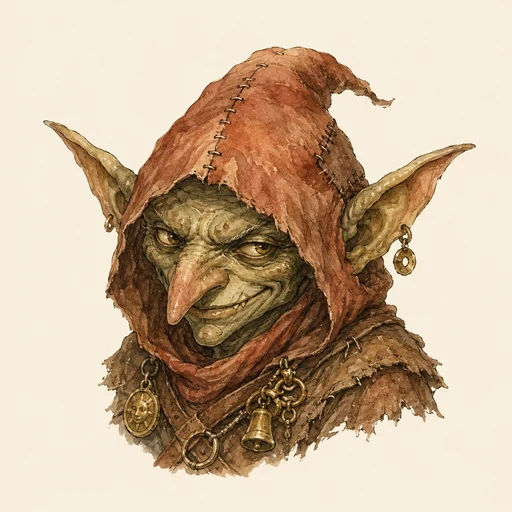
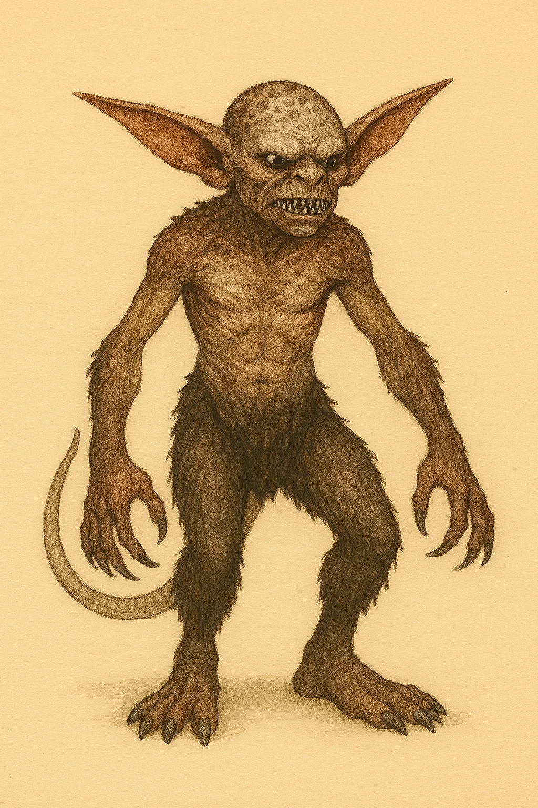
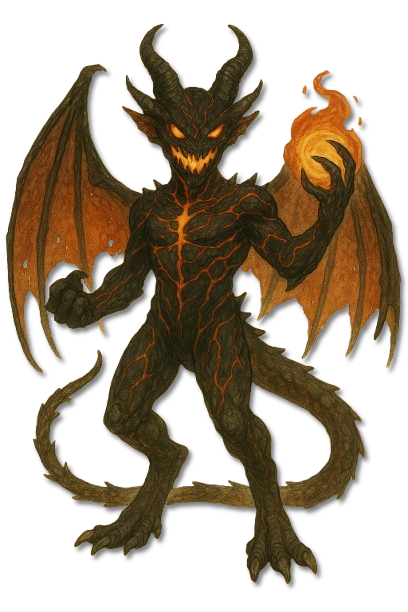
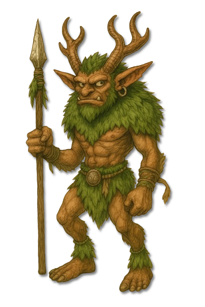

???
???
Noch keine gesicherte Überlieferung.

KreaturenarchivAleria und infernale Sphären · Unter dem Einfluss ihrer jeweiligen Herren · Archivblatt IV / 01
Niedere humanoide Diener der infernalen Götter
Kobolde, Wichtel und Goblins bilden die niederste Stufe vieler infernaler Gefolgschaften. Jede bekannte Linie ist eine groteske Spiegelung ihres göttlichen Schöpfers: klein und körperlich oft schwach, doch durch Überzahl, Fallen, besondere Gaben und eine enge Bindung an ihren Herrn gefährlich.

„Unterschätze nie den kleinsten Diener des Abgrunds; was ihm an Größe fehlt, ersetzt sein Herr durch Zahl, List und einen ganz besonderen Fluch.“Leitsatz der thalenorischen Infernalisten
Sechs Merkmale · Skala 1–10
Die zehn Linien unterscheiden sich stark. Die gemeinsame Bewertung zeigt jene Merkmale, die Begegnungen mit koboldartigen Dienern am häufigsten bestimmen.
Quelle der Einordnung: Aus Gruppentaktik, Clanstruktur, infernaler Abhängigkeit, unterschiedlichen Fähigkeiten und der meist geringen physischen Einzelkraft abgeleitet
Diener der infernalen Götter
Zehn koboldartige Linien sind namentlich und bildlich überliefert. Fünf weitere Archivstellen bleiben als ??? offen, bis gesicherte Namen und Berichte vorliegen.

Diener Dagons
Feuerkobolde sind kleine, geflügelte Abbilder der Dagonaren.
Diener Lunaras
Leidlinge sind bleiche, gebrechlich wirkende Sammler Lunaras.
Diener Grimnars
Grimlinge sind Grimnars grausame Parodie auf die Menschheit: klein, streitsüchtig und von ungezügelter Habgier getrieben.
Diener Bhaals
Blutlinge sind Bhaals kleine, animalische Ebenbilder.

Diener Zatrachs
Hornlinge sind kleine, kräftige Jagddiener Zatrachs mit moosgrüner Haut und altersbedingt wachsenden Hörnern oder Geweihen.
Diener Adars
Drachlinge sind kleinwüchsige, stolze Zwischenwesen mit humanoidem Körper und drachenartigen Schuppen, Klauen und Köpfen.
Diener Amons
Schädlinge sind Amons kleinste und zahlreichste Knechte.
Diener Nemsaras
Rachelinge sind kleine, nachtschwarze Spione Nemsaras mit rot glühenden Augen.
Diener Migdals
Wunschlinge sind giftgrüne, farbenfroh gekleidete Händler Migdals.
Diener Sanguines
Lustlinge sind unauffällige Quasiten in Sanguines Dienerschaft.
???
Noch keine gesicherte Überlieferung.
???
Noch keine gesicherte Überlieferung.
???
Noch keine gesicherte Überlieferung.
???
Noch keine gesicherte Überlieferung.
???
Noch keine gesicherte Überlieferung.
Kobolde, Wichtel und Goblins gelten als niederste Ebene der infernalen Hierarchie. Sie dienen als Sklaven, Boten, Spione, Jäger oder Werkzeuge und treten überall dort auf, wo der Einfluss eines infernalen Gottes die Welt berührt.
Jede Linie spiegelt Wesen und Macht ihres Schöpfers. Dadurch reichen die Erscheinungsformen von animalischen Rudeljägern über geisterhafte Sammler bis zu listigen Händlern, deren geringe Größe wenig über die tatsächliche Gefahr verrät.
Die infernalen Götter schufen diese Wesen als absichtliche Verzerrung himmlischer Archetypen. Wo Celestiale Erhabenheit zeigen, tragen Kobolde groteske, chaotische oder düstere Züge und bleiben eng an den Willen ihrer Herren gebunden.
Viele Linien ahmen menschliche Gesellschaft in vereinfachter oder verzerrter Form nach. Clans sammeln Artefakte, bauen primitive Waffen und folgen Schamanen oder starken Kriegern; andere leben als organisierte Schwärme oder vollkommen unterwürfige Hausdiener.
Ihre Verständigung reicht von Grunzen und Fauchen bis zu eigenen Dialekten, flüssiger Verhandlung oder Gedankensprache. Auch der Verstand folgt keiner gemeinsamen Stufe: Manche handeln fast nur aus Instinkt, andere planen, täuschen und lesen die Schwächen eines Gegenübers mit großer Genauigkeit.
Isolierte Kobolde sind häufig leicht zu überwältigen. In ihrem Revier nutzen sie jedoch Überzahl, Fallen, Engstellen und besondere Gaben; deshalb sollten Kundschafter den Anführer, vorbereitete Fluchtwege und die Bindung der jeweiligen Linie erkennen, bevor sie eine Gruppe angreifen.
Wird eine Gruppe zerstreut oder ihr Anführer ausgeschaltet, brechen viele einfache Clans rasch auseinander. Magisch geprägte Linien verlangen dagegen eine passende Antwort: Feuerkobolde fürchten Wasser und Eis, Wunschlinge sorgfältige Sprache, und körperlose Leidlinge lassen sich mit gewöhnlichen Waffen kaum erreichen.